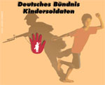
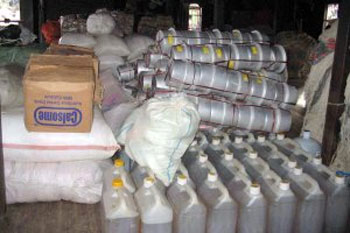

|
Hilfsmaßnahme für die Opfer des Zyklons Nargis im Myanmar
terre des hommes Murgtal/Mittelbaden bittet um Unterstützung seiner langjährigen Partner in Burma |
|
Seit mehr als zehn Jahren sammelt die mittelbadische Arbeitsgruppe von terre des hommes (tdh) für Projekte in Myanmar (Birma. engl. Burma), insbesondere für Kindersoldatinnen und –soldaten, für verfolgte Minderheiten, Flüchtlinge und Minenopfer, aber auch für die in Hausarrest lebende Friedensnobelpreisträgerin Aung San Suu Kyi.
Hilfe für die Opfer in Pathein
Eine Mitarbeiterin der tdh-Partnerorganisation METTA beschreibt die Hilfsmaßnahmen in der Region um die Stadt Pathein (28.5.08): „METTA versorgt alle Lager, die vom christlichen Kloster Myaung Mya in Pathein eingerichtet wurden. Die Menschen sind im Kloster selbst, im Rathaus und in drei Schulen untergebracht. Hier gibt es neun Lager in denen 9.000 Menschen leben, alle stammen aus den Dörfern um Laputtar im Irrawaddy-Delta, dem am schlimmsten durch den Wirbelsturm »Nargis« betroffenen Gebiet.
Den Menschen wurden Moskitonetze, Decken, Kleidung, Schuhe, Seife, Zahnpasta und Zahnbürsten, Kerzen, Kinderspielzeug, Planen, Medikamente und Trinkwasser zur Verfügung gestellt. In einigen Lagern wurden Wasseraufbereitungsanlagen aufgebaut. Kochutensilien sind hier nicht notwendig, da die Mitarbeiter von METTA und weitere freiwillige Helfer für die Wirbelsturmopfer kochen.
METTA führt die Hilfsmaßnahmen in Zusammenarbeit mit lokalen Gruppen, christlichen Organisationen und den lokalen Behörden durch, die alle Aktivitäten sehr streng kontrollieren. Trotz der rigorosen Kontrollen des Militärs ist es METTA gelungen, die Hilfsgüter zu den Menschen zu bringen. Die meisten Waren können auf dem lokalen Markt erworben werden, einige werden aus Rangun angeliefert.
In einigen Lagern stellt METTA ehrenamtlich arbeitende Lehrer zur Verfügung, die sich um die Kinder kümmern und ihnen bei der Bewältigung des Traumas helfen, das sie durch den Wirbelsturm erlitten haben. Sie versuchen diesen Service auch in den Lagern anzubieten, die von der Regierung eingerichtet wurden.
In den Lagern gibt es zurzeit noch besonderen Bedarf an Medikamenten für die Menschen, die durch den Wirbelsturm verletzt wurden. Außerdem werden dringend weitere Wasseraufbereitungsanlagen und Schulmaterialien für die Kinder benötigt. Der größte Bedarf besteht zurzeit an Dieselöl, um die Transporte der Materialien sicherzustellen.
In der nahen Zukunft brauchen die Menschen Baumaterial, um ihre Häuser wieder aufzubauen, landwirtschaftliche Geräte und weitere für den Haushalt notwendige Utensilien. Alle wollen ihre Dörfer gemeinsam aufbauen und ihr normales Leben wieder aufnehmen.“
130.000 Tote oder mehr - Viele Kinder unter den Opfern der Katastrophe
Auch mehr als drei Wochen nach der Katastrophe in Burma sind noch immer viele Menschen von jeder Hilfe abgeschnitten. Knapp 2,4 Millionen müssen dringend versorgt werden. Die Zahl der Todesopfer wird auf 130.000 geschätzt, rund 40 Prozent dieser Opfer sind Kinder. Hunderte von ihnen haben zudem ihre Familien verloren und leben unbegleitet in Notunterkünften. tdh-Projektpartner in Burma berichten nun von Fällen, in denen Menschenhändler versucht haben, Kinder zu verschleppen oder mit Versprechungen anzulocken. Gerade Kinder, die ihre Eltern verloren haben, sind in der Gefahr, Opfer skrupelloser Kinderhändler zu werden. Sie bedürfen eines besonderen Schutzes, um den sich die Projektpartner bemühen.
»Die Lage ist weiterhin chaotisch«, so tdh-Südostasien-Koordinator Bert Cacayan. »Unseren Partner ist es dennoch gelungen, vielen Menschen zu helfen«.
Sofort nach der Flut bei den Hilfsbedürftigen – Bündnis „Entwicklung hilft“
Durch den Einsatz der regionalen Partner SEM, HREIB und METTA konnte tdh bisher weit mehr als 100.000 Betroffene erreichen und lebensrettende Hilfe leisten. Darüber hinaus arbeitet tdh im Bündnis „Entwicklung hilft“ mit anderen Organisationen wie Deutsche Welthungerhilfe, Brot für die Welt, medico international und Misereor zusammen. Rivalitäten und Profilierungssucht gibt es in diesem Bündnis nicht. Spendengelder werden nicht verschwendet, stattdessen unterstützt man sich gegenseitig im Bemühen Katastrophen vorzubeugen und eine nachhaltige Entwicklung in den betroffenen Regionen einzuleiten.
Um schnell und wirksam helfen zu können haben die einheimischen Partner von tdh Strategien entwickelt und so den Klauen der Militärs zu entgehen. Mit kleinen lokalen Transportmitteln umgehen sie die Militärkontrollen und gelangen zu den Überschwemmungsgebieten. Ortskundige Geschäftsleute und Freiwillige werden kaum kontrolliert. Das Netzwerk der Klöster wird genutzt, um Hilfslieferungen an die Brennpunkte der Katastrophe zu bringen. Schließlich werden Hilfsgüter nicht nur im benachbarten Ausland besorgt, sondern auch auf inländischen Märkten zu akzeptablen Preisen aufgekauft.
Die Hilfe von terre des hommes ist sehr effektiv und umfangreich. Dennoch bittet tdh weiterhin dringend um Spenden für die Opfer des Wirbelsturms in Burma.
Stichwort: Wirbelsturm Burma:
Spendenkonto 120 790
Sparkasse Gaggenau-Kuppenheim
BLZ 665 512 90
Spendenkonto 102 748 00
VoBa Baden-Baden/Rastatt
BLZ 662 900 00
Spendenkonto 700 800 700
Volksbank Osnabrück eG
BLZ 265 900 25 |
Burma: Waisenkinder vor Menschenhändlern schützen
terre des hommes: Öffnung des Landes für ausländische Helfer längst überfällig |
Rund 40 Prozent der rund 130.000 Opfer des Wirbelsturms "Nargis" in Burma sind Berichten zufolge Kinder. Hunderte von Kindern haben zudem ihre Familien verloren und leben unbegleitet in Notunterkünften und Flüchtlingslagern. "Berichten unserer burmesischen Partner zufolge sind bereits Fälle bekannt geworden, in denen Menschenhändler versucht haben, Kinder zu verschleppen oder mit Versprechungen anzulocken", erklärte Wolf-Christian Ramm, Pressesprecher von terre des hommes. "Diese verlassenen Kinder sind in Katastrophensituationen in der Gefahr, dass skrupellose Kinderhändler sich ihre Notlage zu Nutze machen. Sie bedürfen eines besonderen Schutzes, für den sich unsere Partner im Land einsetzen."
Die von der burmesischen Militärregierung zugestandene Öffnung des Landes sei zwar begrüßenswert, komme aber viel zu spät. "Unsere Partner sind froh, nun endlich auch die Unterstützung ausländischer Helfer zu erhalten. Unser indischer Experte wird endlich ein Visum erhalten. Allerdings kommt die Entscheidung drei Wochen nach der Katastrophe und damit viel zu spät", so Ramm weiter. "Diese Verzögerung dürfte viele Burmesen, die sofort Hilfe gebraucht hätten und vielleicht gerettet worden wären, das Leben gekostet haben." Umso dringlicher sei es nun, Helfer gerade auch in die zerstörten und nach wie vor schwer zugänglichen Regionen des Irrawaddy-Deltas zu lassen, Hilfstransporte nicht mehr zu behindern und Journalisten die uneingeschränkte Berichterstattung zu ermöglichen.
terre des hommes bittet dringend um Spenden für die Opfer des Wirbelsturms in Burma:
Stichwort: Wirbelsturm Burma:
Spendenkonto 120 790
Sparkasse Gaggenau-Kuppenheim
BLZ 665 512 90
Spendenkonto 102 748 00
VoBa Baden-Baden/Rastatt
BLZ 662 900 00
Spendenkonto 700 800 700
Volksbank Osnabrück eG
BLZ 265 900 25
Weitere Informationen:
|
Deutsches Bündnis Kindersoldaten stellt neuen Weltreport 2008 vor
Situation von Kindersoldaten weltweit dramatisch
Militär-Junta in Burma setzt die meisten Kinder im Krieg ein |
Die Situation für die etwa 250.000 Kinder und Jugendlichen, die weltweit als Soldaten eingesetzt werden, hat sich in den vergangenen vier Jahren kaum verbessert. Zu diesem Ergebnis kommt der neue Weltreport Kindersoldaten 2008, den das Deutsche Bündnis Kindersoldaten heute in Berlin vorstellt. "Der Wille der internationalen Staatengemeinschaft, den Missbrauch von Kindern als Soldaten zu beenden, ist da, und es gibt einzelne Fortschritte", so Ralf Willinger, terre des hommes-Experte zum Thema Kindersoldaten. "Doch die bisherigen Anstrengungen reichen bei weitem nicht aus. Sie erreichen den Großteil der betroffenen Kinder und Jugendlichen noch immer nicht oder zu spät." Besonders gravierend sei die Situation in Ländern wie Kolumbien, der Demokratischen Republik Kongo oder Burma.
"In Burma gibt es bei Armee und nichtsstaatlichen bewaffneten Gruppen Zehntausende von Kindersoldaten. Damit ist Burma vermutlich das Land mit den meisten Kindersoldaten weltweit", so Sascha Decker, Pressesprecher der Kindernothilfe. "Die Gewalt, mit der die Militärregierung schon Neunjährige rekrutiert und anschließend gegen die eigenen Leute kämpfen lässt, ist unvorstellbar." Acht weitere reguläre Regierungsarmeen missbrauchen Minderjährige in Kampfeinsätzen, beispielsweise im Sudan, in Uganda und Israel. 26 Regierungsarmeen haben Minderjährige in ihren Reihen, darunter auch die Bundeswehr. In 24 Ländern rekrutieren nichtstaatliche bewaffnete Gruppen wie Guerilla und Milizen Kindersoldaten.
Zu den positiven Entwicklungen der letzten vier Jahre gehört, dass die Zahl der Konflikte, in denen Kinder eingesetzt werden, von 27 auf 17 gesunken ist. Vor allem in Afrika endeten mehrere Konflikte und viele Kindersoldaten wurden demobilisiert. "Doch in fast allen aktuellen bewaffneten Konflikten weltweit werden Kinder als Soldaten eingesetzt, unter anderem weil sie billiger und leichter manipulierbar sind als Erwachsene", so Ralf Willinger von terre des hommes. "Ein anderer Grund für das Rekrutieren von Kindern ist die verbreitete Straffreiheit. Die Verantwortlichen müssen für dieses Kriegsverbrechen endlich vor internationale und nationale Gerichte kommen."
Der Report dokumentiert die Rekrutierungspraxis und den Einsatz minderjähriger Soldaten sowie ihre Entlassung und Reintegration in 197 Ländern. Herausgeber ist die Coalition to Stop the Use of Child Soldiers, ein Zusammenschluss internationaler Organisationen, die sich dafür einsetzen, dass Kinder unter 18 Jahren nicht als Soldaten missbraucht werden. Das Deutsche Bündnis Kindersoldaten ist der deutsche Zweig der Coalition und hat zwölf Mitgliedsorganisationen.
Weitere Informationen:
|
terre des hommes-Mitgliederversammlung in Bad Honnef:
Ursula Pattberg ist neue Vorsitzende von terre des hommes |
Ursula Pattberg ist neue Vorsitzende der entwicklungspolitischen Kinderhilfsorganisation terre des hommes. Auf der Jahresmitgliederversammlung von terre des hommes wählten die ehrenamtlichen Mitglieder die 64-jährige Buchhändlerin aus Berlin für zwei Jahre in ihr Amt, das sie bereits in den Jahren 1988 bis 1990 ausübte. In ihrer Antrittsrede betonte Pattberg den Doppelcharakter von terre des hommes als Bürgerbewegung und entwicklungspolitische Fachorganisation. »terre des hommes muss Bündnispartner der sozialen Bewegungen sein, die sich gemeinsam mit Kindern und Jugendlichen für die Durchsetzung ihrer Rechte engagieren«, so Ursula Pattberg. »Schlüssel dafür sind die Gleichberechtigung von Mädchen und Frauen und ein Dialog auf Augenhöhe mit unseren Projektpartnern, mit denen gemeinsam wir uns für die Überwindung von Ungerechtigkeit und Not und gegen die Ausbeutung von Kindern einsetzen.«
Die Mitglieder von terre des hommes bekräftigten die derzeitigen Schwerpunkte der Arbeit ihrer Organisation, die im nächsten Jahr auf einer internationalen Delegiertenkonferenz zur Diskussion gestellt werden sollen. »Wir werden uns im Zeitraum bis 2009 besonders gegen ausbeuterische Kinderarbeit und die Gewalt an Kindern in Konflikten engagieren sowie Bildungsprogramme und Projekte zum Schutz von Kindern vor AIDS fördern«, so Pattberg. Ferner werde terre des hommes sich verstärkt für die Sicherung von kultureller und biologischer Vielfalt einsetzen. Mit dieser Programmarbeit könne terre des hommes einen wichtigen Beitrag zur Verwirklichung und zur Sicherung der Rechte von Kindern weltweit leisten. Diese in der UN-Kinderrechtskonvention von 1989 niedergelegten Rechte müssten für alle Kinder verwirklicht werden, auch für Flüchtlingskinder in Deutschland.
Ursula Pattberg ist verheiratet, Mutter dreier Kinder und hat unter anderem als entwicklungspolitische Gutachterin für Frauen- und Kinderprojekte in Indien, Thailand, und den Philippinen gearbeitet. |
Burma: terre des hommes-Hilfslieferungen erreichen die Opfer
Bislang keine Behinderungen durch Militärs |

terre des hommes hat erste Hilfslieferungen in die von der Wirbelsturmkatastrophe betroffenen Gebiete in Burma gebracht. Wie der terre des hommes-Koordinator Bert Cacayan in Thailand erklärte, konnten in der Region Rangun mehr als 1.400 Haushalte in acht Dörfern mit Lebensmitteln und Trinkwasser versorgt werden. Andere Partner des entwicklungspolitischen Kinderhilfswerkes haben damit begonnen, Hilfslieferungen für weitere 300.000 Menschen in den Regionen Rangun und Irrawaddy zu bringen. »Es gibt zwar erhebliche logistische Schwierigkeiten, um die Menschen in den abgelegenen Regionen zu erreichen«, so Cacayan, »doch wurden unsere Lieferungen nicht vom Militär behindert.« terre des hommes bereitet im Augenblick weitere Lieferungen in andere Krisenregionen vor.
terre des hommes hat bereits 76.000 Euro für Soforthilfemaßnahmen zur Verfügung gestellt. Nach wie vor fehlt es in den Krisenregionen an Nahrungsmitteln und sauberem Trinkwasser. Nach Angaben der Kinderhilfsorganisation haben viele Kinder Eltern oder Angehörige verloren. In einigen Regionen sind mehr als 90 Prozent der Schulen zerstört worden.
terre des hommes bittet dringend um Spenden für die Opfer des Wirbelsturms in Burma:
Stichwort: Wirbelsturm Burma:
Spendenkonto 120 790
Sparkasse Gaggenau-Kuppenheim
BLZ 665 512 90
Spendenkonto 102 748 00
VoBa Baden-Baden/Rastatt
BLZ 662 900 00
Spendenkonto 700 800 700
Volksbank Osnabrück eG
BLZ 265 900 25
Weitere Informationen:
|
Vielfalt fördern - Menschenrechte durchsetzen
terre des hommes fordert energische Umsetzung der Empfehlungen des Welternährungsrates durch Bundesregierung und EU |
Die Bundesregierung soll beim EU-Lateinamerika-Gipfel in Lima und der 9. Vertragsstaatenkonferenz der UN-Konvention zur biologischen Vielfalt auf eine energische Umsetzung der Empfehlungen des Internationalen Agrarrates drängen. Diese Forderung erhob die Kinderhilfsorganisation terre des hommes. Um ausreichende landwirtschaftliche Produktion mit dem Schutz von Wasser, Böden, Wäldern und Artenvielfalt zu verbinden, sieht der internationale Agrarrat, ein UN-Gremium von 400 Wissenschaftlern, die Änderung weltwirtschaftlicher Rahmenbedingungen als dringlich an.
"Grüne Revolution und die Missachtung der sozialen und wirtschaftlichen Rechte der Kleinbauern im internationalen Handelsregime haben zur Zerstörung biologischer Vielfalt und der Lebensgrundlagen der kleinbäuerlichen Bevölkerung geführt", kritisiert Bodo von Borries, der das terre des hommes-Programm in Südamerika koordiniert. "Unsere Partner zeigen jedoch seit Jahren, dass mit der Wiedergewinnung der traditionellen Agrarkultur die natürliche Vielfalt bewahrt und die Ernährung gesichert werden kann."
Statt jedoch solche erfolgreichen Initiativen verstärkt zu fördern, würden viele von gegenläufigen Regierungsentscheidungen bedroht, so von Borries. In Peru etwa durch die Bevorzugung von Bergwerksprojekten. Die jedoch vergifteten Luft, Wasser und landwirtschaftliche Produktion. Statt Bauern zu schützen, verfolge die peruanische Justiz ihre Vertreter derzeit als "Terroristen". In Kolumbien würden Bauernfamilien vertrieben, um naturzerstörenden Exportplantagen für Agrospritproduktion Platz zu machen.
Zwar bedauere das jüngste Positionspapier zum Thema des Bundesministeriums für wirtschaftliche Zusammenarbeit und Entwicklung zum Thema Agrartreibstoffe, dass es bislang nicht gelungen sei, verbindliche soziale Standards in der Welthandelsordnung zu verankern und verweise deshalb "zunächst" auf freiwillige Initiativen. Verschwiegen werde jedoch, dass die EU einer der Hauptbremser bezüglich der Etablierung von Sozialstandards sei, kritisiert von Borries. Verbindlicher Menschenrechts- und Umweltschutz müsse über Konferenzerklärung und politische Nischenregelungen hinaus Eingang in die Welthandelsordnung finden.
Weitere Informationen:
|
15 Jahre Haager Konvention
"Bundesregierung muss im Adoptionsrecht nachbessern" |
Das entwicklungspolitische Kinderhilfswerk terre des hommes hat die Bundesregierung aufgefordert, das deutsche Adoptionsrecht im Sinne des Haager Übereinkommens nachzubessern. Die Haager Konvention ist nach Auffassung von terre des hommes ein entscheidendes Instrument bei der Bekämpfung des Kinderhandels. Die Bundesrepublik hat das Vertragswerk im Jahre 2001 ratifiziert. In einer kritischen Zwischenbilanz zum 15. Jahrestag des "Haager Übereinkommens über den Schutz von Kindern und die Zusammenarbeit auf dem Gebiet der internationalen Adoption" wies terre des hommes aber auch auf Mängel hin. Unklarheiten gäbe es zum Beispiel in der Zusammenarbeit zwischen Mitglieds- und Nichtmitgliedsländern. In diesem Zusammenhang verwies terre des hommes auf einen geplanten Staatsvertrag zwischen Deutschland und Vietnam, der in krassem Widerspruch zur Haager Konvention stehe. Auch bei sogenannten Selbstbeschaffungsadoptionen sieht terre des hommes dringenden Handlungsbedarf. "Auslandsadoptionen ohne jede Beteiligung anerkannter inländischer Fachstellen verstoßen gegen die Konvention und gegen das deutsche Adoptionsgesetz", sagte Bernd Wacker, Adoptionsexperte von terre des hommes. "Dennoch wird eine große Zahl von Adoptionen auf diesem Wege durchgeführt."
Im Mittelpunkt einer Adoption müsse das Wohl des Kindes stehen. Auslandsadoptionen seien dann eine Lösung, wenn es keine anderen Formen der Hilfe und Unterbringung eines Kindes im Geburtsland gebe. terre des hommes kritisierte, dass eine solche Prüfung nicht in allen Herkunftsländern gewährleistet sei. Es sei höchste Zeit, Auslandsadoptionen ohne fachliche Vorbereitung und Begleitung endgültig einen gesetzlichen Riegel vorzuschieben.
terre des hommes hat zwischen 1967 und 1998 mehr als 2.800 Waisen und verlassene Kinder an Adoptivbewerber in Deutschland vermittelt und an den Vorarbeiten zur Verabschiedung des Haager Übereinkommens mitgewirkt.
Weitere Informationen:
|
Burma: Hilfsmaßnahmen laufen an
terre des hommes hilft Opfern des Wirbelsturms "Nargis" |
|
Das entwicklungspolitische Kinderhilfswerk terre des hommes bittet weiterhin dringend um Spenden für die Opfer des Wirbelsturms "Nargis" in Burma.
„Unsere Partner werden zunächst Nahrungsmittel, Notunterkünfte und Plastikplanen verteilen und die Betroffenen mit sauberem Trinkwasser versorgen. Dafür haben wir 70.000 Euro zur Verfügung gestellt“, erklärte Hendrik Hempel, Nothilfe-Referent von terre des hommes. „Allerdings benötigen wir nach momentaner Lageeinschätzung mindestens 200.000 Euro, um insbesondere die Kinder in der Katastrophenregion zu versorgen.“
terre des hommes appelliert an die burmesische Militärregierung, die Hilfsorganisationen aktiv zu unterstützen und deren Einsatz nicht durch bürokratische Auflagen zu erschweren. Insbesondere müssten den ausländischen Helfern schnell Visa erteilt werden. Außerdem fordert terre des hommes, Journalisten ungehinderten Zugang zu gewähren und deren Arbeit nicht zu behindern.
terre des hommes bittet dringend um Spenden für die Opfer des Wirbelsturms in Burma:
Stichwort: Wirbelsturm Burma:
Spendenkonto 120 790
Sparkasse Gaggenau-Kuppenheim
BLZ 665 512 90
Spendenkonto 102 748 00
VoBa Baden-Baden/Rastatt
BLZ 662 900 00
Spendenkonto 700 800 700
Volksbank Osnabrück eG
BLZ 265 900 25
Weitere Informationen:
|
Burma: "Hilfsmaßnahmen dürfen nicht behindert werden"
terre des hommes hilft Opfern des Wirbelsturms "Nargis" |
|
Das entwicklungspolitische Kinderhilfswerk terre des hommes bittet dringend um Spenden für die Opfer des Wirbelsturms "Nargis" in Burma. Für die Versorgung der Opfer mit Lebensmitteln, Trinkwasser und Notunterkünften stellte die Organisation zunächst einen Betrag von 20.000 Euro zur Verfügung. Nach Einschätzung der Kinderhilfsorganisation werden weitere Mittel dringend benötigt. terre des hommes will sich vor allem um die Versorgung der Kinder in der Katastrophenregion kümmern.
Der terre des hommes-Referent für Nothilfe, Hendrik Hempel, rief die burmesische Militärregierung dazu auf, die Arbeit der Hilfsorganisationen nicht zu behindern. "Im Moment ist die Situation noch sehr unübersichtlich. Wir erwarten deshalb von der burmesischen Regierung, dass sie die humanitären Hilfsmaßnahmen für die Opfer aktiv unterstützt."
terre des hommes bittet dringend um Spenden für die Opfer des Wirbelsturms in Burma:
Stichwort: Wirbelsturm Burma:
Spendenkonto 120 790
Sparkasse Gaggenau-Kuppenheim
BLZ 665 512 90
Spendenkonto 102 748 00
VoBa Baden-Baden/Rastatt
BLZ 662 900 00
Spendenkonto 700 800 700
Volksbank Osnabrück eG
BLZ 265 900 25
Weitere Informationen:
|
30 Jahre terre des hommes Murgtal / Mittelbaden
30 Jahre Aufklärung und Information
|
Ob in Guatemala, Peru, Burkina Faso, Sambia, Indien oder Vietnam - die Thematik ist fast überall dieselbe: Millionen Kinder hungern, werden (sexuell) ausgebeutet oder leiden unter Krieg und Verfolgung. Die deutsche Hilfsorganisation terre des hommes (tdh) engagiert sich seit nunmehr 40 Jahren auf der ganzen Welt für Kinder in Not, kämpft gegen Kinderhandel, Kindersoldatentum, sexuellen Missbrauch und Kinderarbeit. Auf bald 30 Jahre Aufklärungs- und Informationsarbeit kann auch die Arbeitsgruppe terre des hommes Murgtal/Mittelbaden zurückblicken. Anfang Dezember 1977 startete die Gruppe unter Federführung des Kuppenheimer SPD-Stadtrats Heinz Wolf und seine Frau Anne, unterstützt von einigen SPD-Leuten, ihre ersten Aktionen.
„Wir wollten in einer Zeit des entwicklungspolitischen Aufbruchs den Blick schärfen für die Missstände in der Welt", erklärt tdh-Mitglied Wolfgang Deppisch. „Doch die Anfangszeit war schwer, die Aufgeschlossenheit der Bürger noch gering und die Arbeit daher recht mühsam." Man sei damals überdies in die linke Ecke gestellt worden. Doch das Ehepaar Wolf, die mittlerweile rund 20 anderen ehrenamtlichen Mitglieder und die vielen weiteren Helfer haben durchgehalten - „so lange, bis sich das Blatt gewendet hat", wie Deppisch es formuliert. Seit fast 30 Jahren macht die Arbeitsgruppe die mittelbadische Bevölkerung von Durmersheim über Rastatt, Gaggenau und Baden-Baden bis nach Bühl auf das Schicksal der Kinder und Familien in der „Dritten Welt" aufmerksam, informiert über wirtschaftliche und politische Zusammenhänge und schafft durch Aktionserlöse die finanzielle Grundlage für die Arbeit der Hilfsorganisation.
Außer regelmäßigen Aktionen wie der Radbörse in Kuppenheim, diversen Konzerten, dem traditionellen Kinderfest in der Kuppenheimer Realschule und dem Basar in der Wörtelhalle organisieren die Mitglieder Kunstausstellungen, Verkaufs- und Infostände und Märchenlesungen oder beteiligen sich an Spenden-, Hilfs- und anderen Aktionen. An Möglichkeiten, die Arbeit von terre des hommes zu unterstützen, mangelt es nicht. „Ohne unsere ehrenamtlichen Mitarbeiter und Helfer oder die Sponsoren, Vereine, Gruppen und Einzelpersonen, die uns seit. Jahren unterstützen, wären wir aufgeschmissen", bringt es Wolfgang Deppisch auf den Punkt. Der hohe persönliche Einsatz lohnt sich, was die Besucherzahlen und die Spendenergebnisse belegen. „Die Spendenbereitschaft ist enorm; im Schnitt bringen wir pro Jahr etwa 70 000 Euro an Spendengeldern und Aktionserlösen für Kinder-, Jugend- und Familienprojekte auf, das sind auf 30 Jahre hochgerechnet mehr als zwei Millionen Euro", berichtet Deppisch.
„Viel erreicht - viel zu tun!", lautet das Motto zum 40-jährigen Bestehen des deutschen Kinderhilfswerks. Damit soll zum Ausdruck gebracht werden, dass einerseits zwar viel bewegt wurde, was die Befreiung der Kinder von Ausbeutung, Not und Sklaverei, ihre Rettung aus Kriegs- und Krisengebieten, die Sorge für ihre Ernährung, Gesundheit, Bildung und Ausbildung, die Unterstützung von Kriegs- und Aids-Waisen oder die Resozialisierung von Straßenkindern betrifft. Andererseits macht das Motto aber auch deutlich, wie weit die Menschheit von der „Erde der Menschlichkeit" nach wie vor entfernt ist. Weltweit müssen nach tdh-Angaben 217 Millionen Kinder arbeiten, 120 Millionen leben in Ausbeutung, Sklaverei und Prostitution, mehr als 120 Millionen wird das Recht auf Bildung und Ausbildung verwehrt, rund 250.000 sind weltweit in Armeen oder paramilitärischen Verbänden zwangsrekrutiert, mindestens zwei Millionen kamen in den vergangenen zehn Jahren in bewaffneten Konflikten ums Leben, und schätzungsweise 2,3 Millionen Kinder sind mit HIV infiziert.
„Solche Zahlen stimmen traurig; sie zeigen, dass es noch viel zu tun gibt. Wir können andererseits aber auch stolz sein auf das, was wir bisher erreicht haben", betont Deppisch mit einem lachenden und einem weinenden Auge. Traurig stimmt den Rastatter Hauptschullehrer auch, dass hier zu Lande das Interesse, genauer informiert zu werden, ebenso abgenommen habe wie die Bereitschaft zu kontroverser Diskussion und Kritik. Trotz nach wie vor bestehender Hemmschwellen in der Bevölkerung und der zuweilen selbst gestellten Frage „Sind wir wirklich vorangekommen?", dürfe man sich nicht entmutigen lassen. Mut macht dem 57-Jährigen immer wieder die Gewissheit, „dass unsere Arbeit sinnvoll ist und Positives bewirkt". Mut macht ihm aber auch das unermüdliche Engagement der einheimischen Projektbetreuer, die sich in ihren jeweiligen Ländern unter schwierigen Lebensumständen für das Wohl anderer einsetzen. „Ich empfinde es als Privileg, mit Hilfe von terre des hommes hierzu einen Beitrag leisten zu dürfen."
Der Name „terre des hommes" (Erde der Menschheit) geht zurück auf ein Buch des französischen Schriftstellers Antoine de Saint-Exupery („Der kleine Prinz"). Die deutsche Sektion wurde 1967 nach Schweizer Vorbild in Stuttgart von dem Schriftsetzer Lutz Beisel gegründet. Zunächst wurden Kinder aus dem Kriegsgebiet in Vietnam zur ärztlichen Behandlung nach Deutschland gebracht und Adoptionen von Kriegswaisenkindern vermittelt. 1968 weitete das entwicklungspolitische Kinderhilfswerk sein Hilfsprogramm auf Afrika aus (Biafra-Konflikt). Mittlerweile arbeitet die Organisation, die sich überwiegend durch private Spenden finanziert, mit Partnerorganisationen in Asien, Afrika und Lateinamerika zusammen und leistet „Hilfe zur Selbsthilfe". Um den Grundstein für eine bessere Zukunft der Kinder zu legen, fördert der Verein unter anderem Ausbildungs- und Schulprogramme, unterstützt Partnerprojekte in den Förderländern und hat sich auch als politisch agierende Instanz einen Namen gemacht. Ihre Aufgabe sieht die Organisation neben der finanziellen Förderung von Projekten vor allem in der Vermittlung, der Information und Bekanntmachung. Die „Internationale Föderation Terre des Hommes" umfasst heute elf nationale Mitglieder. Bislang wurden weltweit 4.500 Projekte mit insgesamt rund 290 Millionen Euro Spenden unterstützt.
Badische Neueste Nachrichten vom 16.01.2008 |
30 Jahre terre des hommes Murgtal / Mittelbaden
Zwei Millionen Euro in der Region gesammelt |
|
Unzählig viele Millionen Kinder der rund 6,5 Milliarden Menschen auf der Welt müssen heute immer noch leiden, haben Hunger, werden verkauft, ausgebeutet, müssen als Kindersoldaten kämpfen, als Prostituierte arbeiten, dürfen nicht in die Schule, leben in den Straßen oder auf Müllkippen. Die „terre des hornmes"-Arbeitsgruppe (tdh) Murgtal/Mittelbaden macht seit 30 Jahren auf diese Verhältnisse aufmerksam und konnte dank ihrer vielfältigen Aktivitäten mehr als 30 000 Kindern eine neue Zukunft schenken.
Fast zwei Millionen Euro konnte die tdh-Arbeitsgruppe Murgtal/Mittelbaden in den vergangenen 30 Jahren in der Region zusammentragen, um Projekte in Asien, Afrika und Lateinamerika zu unterstützen. 45 Konzerte, 27 Basare, 17 Radbörsen und 25 Kinderfeste sowie unzählige kleinere Aktionen wurden von rund 40 festen Mitarbeiterinnen und Mitarbeitern sowie zahlreichen Helferinnen und Helfern über all die Jahre hinweg organisiert, um die Menschen in der Region zu mobilisieren und den Kindern auf der ganzen Welt neue Hoffnung auf ein besseres Leben zu schenken.
„Die tdh-Arbeitsgruppe Murgtal/Mittelbaden ist eine der erfolgreichsten Arbeitsgruppen von terre des hommes Deutschland sowohl hinsichtlich der Spenden als auch der Aktivitäten", äußert Andreas Rister, Leiter des Referats Verein bei terre des hommes Deutschland, der die 110 tdh-Arbeitsgruppen und 140 tdh-Stützpunkte in Deutschland betreut.
Plakatausstellung als Ausgangspunkt
Dabei hatte alles ganz unspektakulär am 18. Dezember 1977 mit einer Plakatausstellung auf Initiative der SPD-Ortsvereine Kuppenheim und Bischweier angefangen. Angeregt durch die Adoptionsthematik wollten Anne und Heinz Wolf auf die Probleme der dritten Welt aufmerksam machen und zu sinnvollem Handeln aufrufen.
„Die Resonanz auf diese Veranstaltung war überwältigend, schon nach wenigen Wochen hatten wir Dauerspender und viele interessierte Besucher, die mitarbeiten wollten", bemerkt Heinz Wolf. Ein Jahr später haben sich zwölf Bürgerinnen und Bürger aus Kuppenheim und Bischweier entschlossen, die tdh-Arbeitsgruppe zu gründen. „Terre des hommes war damals schon sehr glaubwürdig und kompetent. Hier wird nicht nur karitativ geholfen, sondern in überschaubaren Projekten dort geholfen, wo die Menschen im Land selbst Initiativen ergreifen", erklärt Wolfgang Deppisch, der seit über 25 Jahren zum festen Mitarbeiterstamm gehört. „Und terre des hommes mischt sich immer wieder in die Entwicklungs-, Familien- und Ausländerpolitik in Deutschland ein", fügt Wolf hinzu.
Mit der Ausweitung der Aktivitäten nach Gaggenau und Gernsbach, für die sich Anfang der 80er Jahre maßgeblich Thomas Riedinger engagierte, wuchs die Arbeit und der Bekanntsheitsgrad der tdh-Arbeitsgruppe.
„Mitte der 80er Jahre hatten wir teilweise 30 Veranstaltungen pro Jahr - auch für Kinder in Deutschland und bei uns in der Region", erzählt Wolf. So sei unter anderem die Holzbrücke in Horden ein Ergebnis der damaligen Aktionen.
„Eine wichtige Säule unserer Arbeit sind die rund 100 Dauerspender und rund 100 Sponsoren aus Geschäftsleuten und Institutionen, die bis zu 35 Prozent unserer Arbeit ausmachen", so Wolf. „Im Jahre 1978 hatten wir rund 3.000 Euro an Dauerspenden, heute haben wir fast das Zwanzigfache", bemerkt Wolf. Und auch die Zahl der Helfer hat zugenommen.
„Was uns fehlt, sind junge Leute, die bereit sind, regelmäßig bei uns mitzuarbeiten", so Wolf.
In Informationsveranstaltungen möchte die tdh-Gruppe im Laufe dieses Jahres Möglichkeiten aufzeigen, wie ihre Arbeit tatkräftig unterstützt werden kann.
Badische Neueste Nachrichten vom 06.01.2008
Text: Anne-Rose Reif |
|
|
|
 Ansprechpartner Ansprechpartner
|
|
Wolfgang Deppisch
(Projektinfos)
Tel. 07222 / 32927
Heinz Wolf
(Sponsoring, Allgemeines)
Tel. 07225 / 75543
weitere Ansprechpartner
|
|
Erlöse
1992-2012
|
|

Jahr |
Euro |
1992 |
70.000 |
1993 |
75.600 |
1994 |
83.883 |
1995 |
69.617 |
1996 |
51.412 |
1997 |
61.749 |
1998 |
60.333 |
1999 |
68.742 |
2000 |
85.492 |
2001 |
106.375 |
2002 |
78.937 |
2003 |
84.027 |
2004 |
76.662 |
2005 |
149.941 |
2006 |
84.497 |
2007 |
105.958 |
2008 |
104.053 |
2009 |
100.833 |
2010 |
107.254 |
2011 |
103.600 |
| 2012 |
158.250 |
| 2013 |
163.420 |
1977-2013 |
mehr als 2,7 Mio. € |
|
Detailansicht der Erlöszahlen |
|
|


;)